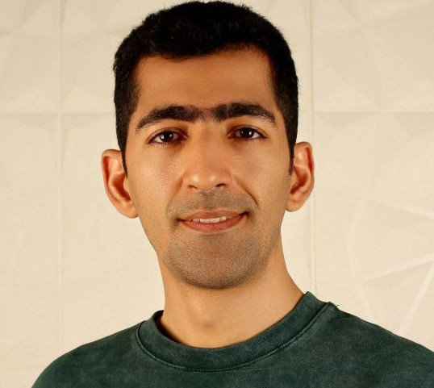

Mahdi Kohan Sefidi
Master of Economics, Khatam University
Quantitative finance • Complexity economics • Behavioral economics
Data Scientist • AI Expert
Education
- M.Sc. in Economics Khatam University, Iran (2019–2021)
Master's Project 1, Equity Premium Puzzle: Analyzing the equity premium puzzle in Iran's market through behavioral economics, with a focus on biases like loss aversion and framing effects.
Master's Project 2, Self-Control Awareness: Investigating how self-control awareness impacts financial decision-making and investment behavior.
Grade: A
- One-year MBA Shahid Beheshti University, Iran (2018–2019)
Grade: A
- B.Sc. in Mechanical Engineering Amirkabir University of Technology (Tehran Polytechnic) (2014–2018)
Papers
-
Predicting Financial Market Crises using Multilayer Network Analysis and LSTM-based Forecasting of Spillover Effects
Author: Mahdi Kohan Sefidi
DOI: 10.48550/arXiv.2505.11019 2025 -
Discounting under inequality and lobbyists disagreement
Authors: M Mousavi, MK Sefidi
DOI: 10.48550/arXiv.2502.05342 2025 -
The Impact of Node Addition and Deletion on Network Production Fluctuations
Author: Mahdi Kohan Sefidi
DOI: 10.48550/arXiv.2505.10154 2024 -
Awareness of Self-Control Problem
Authors: MM Mousavi, MK Sefidi, S Allahyarkhani
DOI: 10.48550/arXiv.2402.11072 2024
Job Resume (2016–Now, part & full time)
- Business Intelligence (BI) Expert — Experience across several industries, including telecom, IPTV, and marketing campaign analysis. Provided actionable insights and data-driven strategies for business growth.
- Revenue Assurance — Ensured accurate revenue streams and minimized leakage in telecom and IPTV sectors through data analysis and process optimization.
- Big Data Analysis & Engineering — Designed and implemented big data solutions, leveraging distributed systems and databases for scalable analytics.
- Deep Learning R&D Team Lead — Focused on NLP and LLMs, including RAG systems (graph-based retrieval, advanced retrieval methods, and reasoning) for tax system chatbots.
Open Projects
- Agent-based Macroeconomics — A simulation framework for studying macroeconomic phenomena using agent-based modeling, focusing on emergent properties and policy analysis.
- El Farol Bar Problem — An implementation and exploration of the classic El Farol Bar problem, demonstrating bounded rationality and collective behavior in agent-based systems.
- Wealth Model — A computational model to analyze wealth distribution dynamics and inequality, inspired by statistical physics and complexity economics.
- Imputation miss values in GDP with KNN — A Kaggle notebook demonstrating the use of KNN for imputing missing GDP values.